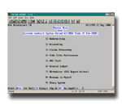

- service -
You will be responsible for all such charges incurred. Unless indicated otherwise, all prices shown are in United States dollars. If you are currently a member of Juno's free or premium service and would like to download the latest version of the Juno software, please click here. For more information on usage-related constraints associated with Juno's free service that are not applicable to Juno's premium services, click here. Juno is a registered trademark, and the Juno logo is a trademark, of Juno Online Services, Inc.
 |
. RSG-Lab RSG-Lab The Remote Sensing and Geoinformatics Laboratory (RSG-Lab) has evolved during the past two decades into a valuable unit within ITC. For many staff and students the RSG-Lab has become an information center where immediate service can be obtained on various subjects. Production The production can be subdivided into the following categories Data Mining, whereby the customer is aided with the (online) search and ordering of image data. Input Service, where the customer is helped with the conversion and ingestion of the data for specific software packages. |
|  |
Job Corps offers job training, basic education, social skills training, and support services to young people ages 16-24 who face multiple barriers to employment. Job Corps Centers can be found in all 50 states and Puerto Rico. Grants-at-a-Glance The Fish and Wildlife Service administers a variety of natural resource assistance grants to governmental, public and private organizations, groups and individuals. .. |
|
.x worksheet (5k) This file contains a list of the aggregate amounts of each specific grant. SSAs at major service block level Data - Lotus 123 v2. x WK1 worksheet (70k) or Tabulation - Word 97 file (125k) This table shows the approximate effects of changes in data, control totals and methodology on SSAs. Changes in data are estimated as the residual difference. |
read more at: http://www.ihs.gov/GeneralWeb/HelpCenter/CustomerServices/FAQ_index.asp